|
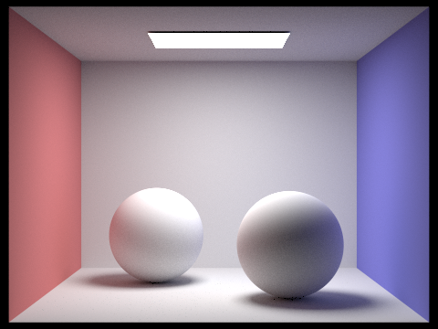
|
|
|
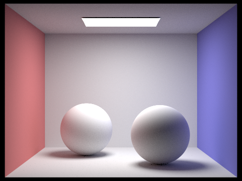
|
PathTracer was an extremely interesting introduction to the wonderful world of light in computer graphics. Incredibly intuitive, but equally powerful, Pathtracing is a technique to simulate virtual light, and the way it interacts with the world. I learned about the general ray tracing pipeline, material simulation and optics (reflection, and BSDF), ray and intersection geometry (Moller-Trumbore algorithm), and PathTracing optimizations (BVH and Adaptive Sampling).
Overview of the Ray Casting Process:
We can imagine looking at a grid of pixels. For each pixel (x, y) we need to somehow take an estimate of the radiance for this pixel, then write the corresponding
Spectrum to a frame buffer. For this process, we will use Monte Carlo estimation, an interesting, compact and powerful estimation algorithm that will enable us to take an
unbiased estimate of the radiance for each pixel. To that end, for each pixel, we will take ns_aa samples, where for each sample, we will take a random position in
that pixel, and shoot a ray from the camera into the world passing through the random location, and calculate the radiance that returns to us. For each of these ns_aa samples,
we will sum up the global radiance, by calling est_radiance_global_illumination then divide by the number of samples, effectively averaging the radiance for that
pixel. This is the value that will ultimately be written to the scene buffer.
Camera Ray Generation:
Of course, we can’t appeal to this abstract notion of camera ray generation, so let us concretize what that truly means. To generate the camera rays themselves, once we get the
normed world space pixel coordinates (normed by screen width and height dimensions), we first need to determine the map into camera space. This is relatively simple, since as
long as we know the horizontal and vertical fields of view hFov and vFov respectively), we can simply correspond the top right of world space (1, 1)
to (tan(0.5 * hFov), tan(0.5 * vFov), -1), and the bottom left to (-tan(0.5 * hFov), -tan(0.5 * vFov), -1). From here, it is easy to derive the
transformation from normed world space to camera space, and having determined the camera space coordinate of the position we passed in, we can create a vector (the direction)
from the camera to this point, then transform the origin (camera location) and direction to world space. With an origin and direction in world space, our ray is fully defined!
Primitive Intersection:
Our pathtracing algorithm depends on the ability to deal with intersections with primitives in our scene, and as such, we implement procedures to handle intersections with triangles, and intersections with spheres. At a high level, when a ray is cast into the scene, we will test the primitives in its path, searching for intersections. Every primitive’s intersect method requires a ray, and an intersection object. If we determine that the ray in fact intersects the primitive, and has not yet intersected another primitive (the time field of the intersection object is not less than the intersection time with the primitive), we will take the lowest valid time of intersection, and copy this value to the intersection object’s time field. We will further provide references to the primitive of intersection, the bsdf of the primitive intersected, and the normal to the primitive. In this way, intersection objects track all the necessary information to eventually handle light-object reflections.
Intersecting Triangles:
Since we’ll end up intersecting millions of triangles during our stint with pathtracing, we’ll seek to optimize the ray-triangle intersection as much as possible. To that end, we will leverage and implement the Moller-Trumbore algorithm. The Moller-Trumbore algorithm hinges on basic linear algebra, and is far more complicated than I give it credit; a much more thorough explanation can be found here.
Given a triangle defined by points p0, p1 and p2, and a ray defined by origin O and direction D, parametrized by
time t, we can leverage barycentric coordinates to determine that an intersection of the two satisfies the equality: O + tD = p0 + b1(p1 - p0) + b2(p2 - p0).
Recasting this equation as a matrix, we can thus determine the equality: Mx = b where M = [-D, p1 - p0, p2 - p0], x = [t, b1, b2],
and b = O - p0. A simple application of Cramer’s Rule allows us to determine that with a triangle-ray intersection, x = 1 / [S1 * E1] x [dot(S2, E2), dot(S1, S) , dot(S2, D)];
E1 = p1 - p0, E2 = p2 - p0, S = O - p0, S1 = D x E2, S2 = S x E1. This will allow us to determine t, b1, and b2,
and since t is a recast of time, and b1 and b2 are based on the formulation of barycentric coordinates, this implies we see a valid
triangle ray intersection only if t is equal to or greater than 0, b1 and b2 are between 0 and 1 inclusive, and (1 - b1 - b2)
is less than or equal to 1. Given any ray and triangle, we thus can easily determine whether the ray intersects the triangle using the Moller-Trumbore algorithm as defined.
|
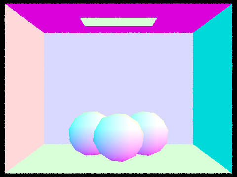
|
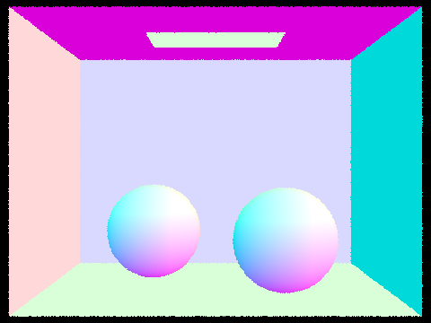
|
An Overview of BVH Generation:
Intuitively, the BVH construction algorithm aims to cut the elements into partitions in a way that can accelerate our ray-primitive intersection tests. Our construction function
takes as input a start iterator, an end iterator, and a maximal leaf size. The start and end iterators essentially allow us to iterate over all the
primitives that are either in this node (the root), or the subnodes of this node. We can abstract away the fact that the complete 1D vector of primitives is stored only once
in memory, and all iterators are in fact referencing this underlying data structure. The first step in the algorithm is to determine the number of elements. We will iterate over
all the primitives using our start and end iterators and simultaneously create a bounding box with all the primitives encapsulated, and count the number of primitives.
If the number of primitives is fewer than the maximal leaf size, we can just make a leaf with the complete bounding box, with no left or right subnode, whose start and end
iterators point to the start and end iterators we passed to the function.
Otherwise, we know we have more elements that can be efficiently captured in one leaf, so we must generate a larger tree structure. To this end, we will first determine the longest axis of our primitives bounding box, since we will partition the elements depending on their position along the longest axis. Without loss of generality, assume the x-axis is the longest axis. We calculate the midpoint of this axis, then split the elements into two vectors, left and right, where elements in the left vector are primitives whose x-coordinate is less than or equal to the midpoint we calculated, and primitives in the right vector have a larger x-coordinate than the midpoint. There is a small issue. To avoid an infinite recursion overflow, we have to avoid cases that leave either the left or right subvectors empty. A simplistic (and admittedly poorly optimized) way of doing this is randomly cutting our collection of primitives such that half of the primitives are set to the left vector, and the other half to the right vector.
We must now reformat the primitives in the complete primitives vector (remember, this vector is stored only once in memory) such that the iterators mirror the state of the
BVH. What this means is that we simply need to determine the index in the complete primitives vector of the start iterator and the end iterator. Then we will copy the elements
in the left vector to the complete primitives vector from the start index, to the start + left.size() index, and copy the elements in the right vector
from the start + left.size() index to the end iterator’s index.
Having reformatted the underlying complete primitives vector, we can now recursively instantiate the left and right branch of our BVH tree. We will set the left field of our root
node to the result of constructing a BVH with start iterator equal to the start iterator passed in to the root construct, and end iterator equal to the
start iterator + left.size(). We will set the right field of our root node to the result of constructing a BVH with start iterator equal to
start + left.size(), and an end iterator equal to the end iterator passed into the root construct. This allows us to recursively construct our BVH!
|
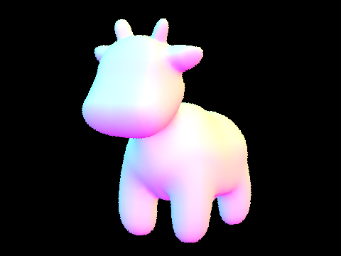
|
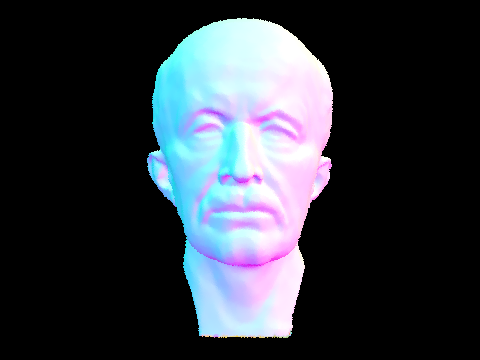
|
|
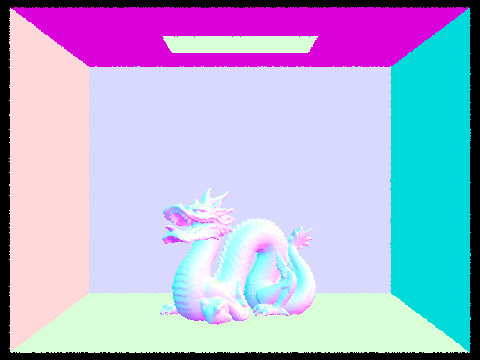
|
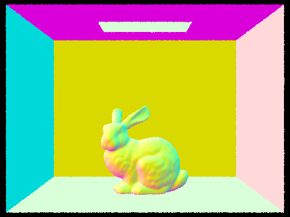
|
|
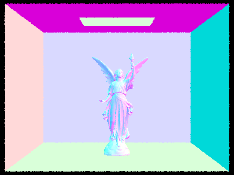
|
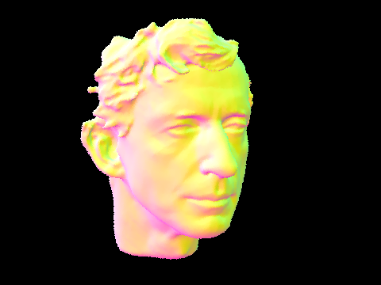
|
| Render Time - Unoptimized (seconds) | Render Time - BVH Optimized (seconds) | |
|---|---|---|
| cow.dae | 29.0670 | 0.2432 |
| maxplanck.dae | 292.7574 | 0.3799 |
| CBbunny.dae | 199.8900 | 0.2250 |
| CBdragon.dae | 406.0455 | 0.2220 |
| peter.dae | N/A | 0.2851 |
| CBlucy.dae | N/A | 0.2271 |
Timing Comparison:
As you can clearly see from the table above, the difference is stark, and immediately it is clear why we apply this sort of optimization to intersection tests. Take for instance CBdragon.dae, which renders in about 0.2271 seconds with our BVH optimization. And without? It renders at an abysmal 406.0455 seconds, which is almost 7 minutes. This means BVH has sped up rendering times by an incredible factor of 1787. Rendering scenes with normal shading, even without tracing light can already take minutes without our BVH optimization, but less than a second with. Intuitively it should be relatively clear why creating this hierarchy is so effective. If we imagine a single ray traversing our scene, it is highly unlikely it will hit every triangle in the scene. Spatial locality is a huge deal in ray tracing, so we shouldn’t waste our time checking triangles that will evidently never be hit. For each collection of primitives, we track the minimal bounding box that encapsulates these primitives. If we can quickly determine that the ray doesn’t intersect the bounding box, we don’t need to intersect test any of the triangles encapsulated by the bounding box, and we won’t need to test any of the primitives in any of the subnodes rooted at this node either. Essentially, we can avoid testing millions of primitives just with this simple optimization. Of course, this isn’t a perfect solution. Since bounding volumes are split by primitive collection, not pure space, there are some inefficiencies with overlapping bounding volumes, for which we need to intersect test both overlapping volumes, however, in our unoptimized version, we must test all primitives with each ray, which is clearly far worse.
|
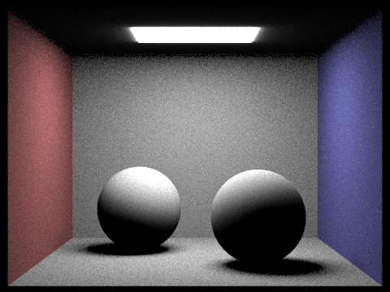
|
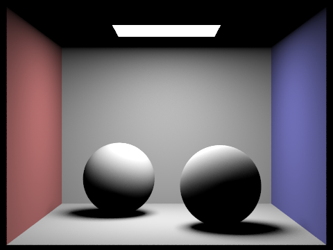
|
|
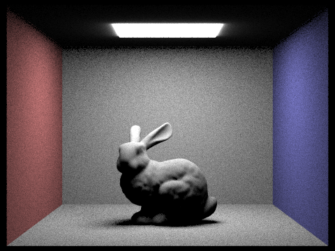
|
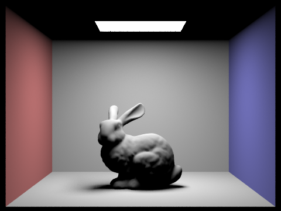
|
Uniform Hemisphere Lighting:
To implement Uniform Hemisphere Lighting (UHL), we assume, from part 1, we have already traced a ray from our camera into our scene, and we’ve found an intersection! The question now is: is there radiance that travels from a light source to our intersection, such that it will bounce back along the ray we’ve traced to the camera, lighting up the pixel? We will again employ Monte Carlo Estimation here to attempt to approximate the intersection irradiance, which will thus tell us how much light will bounce off our intersected object, to our camera.
We implement estimate_direct_lighting_hemisphere, which is passed a ray object r, and an intersection object that represents the intersection of the
ray with some primitive. Tracing the Monte Carlo estimation procedure, for each of our n samples, we will calculate a random direction in the hemisphere of our
intersection, then throw a ray s in the direction of our random sample, from the hit point (intersection location). Then we check to see if s hits a
light source. If we intersect an object q that isn’t a light source, that means q casts a shadow on our initial intersection point, but if the light
emission of the newly intersected object is positive, this means we’ve hit a light! We can get the emission of the newly intersected object, and since radiance is conserved
through the ray, we can calculate the radiance that will be passed to the camera along r by employing the reflection equation; namely, the light that will be
transported to the camera supposing irradiance E will be 2PI * bsdf(dir_camera, dir_light) * E * cos(angle between light and intersection primitive).
Calculating this for each of our samples, we simply average the radiance that reaches the camera to generate our UHL for each pixel.
Light Importance Sampling:
To implement Light Importance Sampling (LIS) we will perform roughly the same process, the difference being, we will eschew sampling randomly in a hemisphere in favor of sampling
only in the area of the light elements. This is like the difference of first aiming our shot before attempting to shoot a basketball vs. randomly bouncing the basketball in the
room, and hoping it lands in the basket. As you might imagine, the first option results in a drastically higher chance of actually ending up in the basket. As with UHL, we first
start with a ray we’ve traced into the scene, that has intersected some primitive p. From p we will randomly sample each of the lights. After all, for
direct lighting, the only light that will ever reach p will be from one of the light sources, so why bother sampling the floor or the walls (this will change when
we introduce indirect lighting)? For each of the lights in the scene we will sample the light ns_area_light times, by first sampling a random direction that points
to the area of the light. We will then check again to make sure that we aren’t hitting some other primitive first, which would thus mean we’d be shadowed at this point on
p, and if not, we can now calculate the outgoing radiance just as with UHL (remember the reflection equation?). We do have to check to make sure that p
is facing the light, but this is as simple as checking to ensure the cosine of the angle from UHL is between 0 and Pi. If you hold out your hand with the palm facing down, your
lights won’t directly reach the palm of your hand!
There are two caveats to this part. In our reflection radiance calculation from UHL, we multiplied by 2PI, but this doesn’t quite work anymore. In actuality, we
were abstractly dividing by the pdf, the probability density function of sampling such a specific direction, which in the case of a uniform hemisphere is exactly uniform
(1 / 2pi), but with LIS, this is no longer the case. This isn’t really a big deal, we simply need to divide by the proper pdf everytime now, instead of using a
uniform constant pdf. The second hitch is the case of point lights. A point light has an infinitely small area of light emission, so it's clear why UHL is a bad idea. But this
also means we don’t really need to sample ns_area_light samples, 1 ought to be enough! Either we’re shadowed against the point light or we aren’t. Thus we can early
out of the sampling procedure, but otherwise, this case is a mirror for area light sampling.
Finally, after estimating the radiance arriving from the ray casted to the scene intersecting primitive p for each of the lights, we simply divide this total
radiance by the number of samples, to complete our Monte Carlo Estimator.
UHL vs. LIS Quality Comparison:
While UHL and LIS are both technically valid methods of computing Direct Lighting, taking a quick look at a side by side comparison makes it pretty obvious that LIS ought to be
the preferred method. Even not considering the fact that UHL struggles to render point lit scenes, we can clearly see a plethora of noise scattered throughout the UHL renders,
and this is reasonable. To reiterate an earlier point, “after all, for direct lighting, the only light that will ever reach p will be from one of the light sources,
so why bother sampling the floor or the walls?” This is at the core of the difference between the two. You can think of samples as data quality; the more useful samples
you have, the higher your data quality, and thus image quality will be. Naturally, you have limited computation cycles, so you can only collect so much data. In UHL, you throw
away a lot of your data by sampling random non emissive points, that really don’t give you any actionable data about direct lighting, and as a result, you gain less useful
data, lowering your image quality. If we’re always looking to collect data from useful points, light sources with positive light emission, we’ll inherently amass more data
containing useful lighting calculations. Looking at the images at the beginning of this section, we get a clear visualization for the effects of sampling randomly, vs. sampling
purposefully. The UHL bunny is full of graininess, wrought from light beams that were projected into non emissive surfaces. Since our samples in the LIS bunny only look where
the light emission exists, we clear out a great deal of the grainy samples just by shifting the light beam from a non emissive surface to a light.
Light Ray Comparison (1 Sample Per Pixel):

|
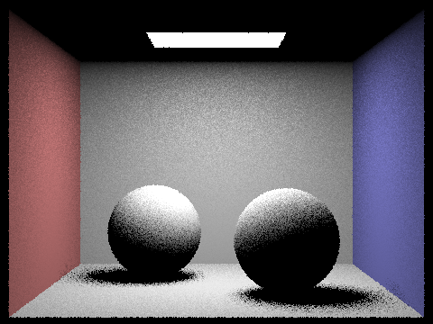
|
|
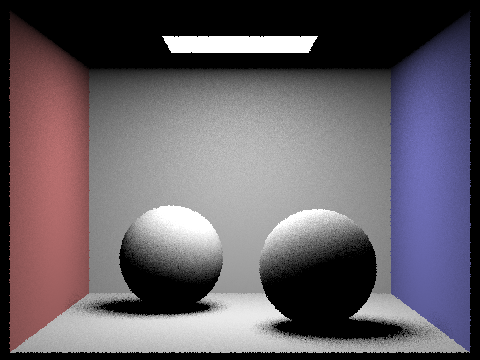
|

|
Notice the amelioration of soft shadow rendering with more light samples, serving to blur the shadowed region, precluding granularity.
|
|
|
There is noticeably still a feeling and semblance of artificiality with direct lighting only, and this is understandable; light doesn’t only travel from the source to the object to our eyes, it will bounce from place to place, focus and diffuse. This is what we attempt to mimic, of course on a smaller scale.
The function at_least_one_bounce_radiance attempts to approximate the radiance of rays that will back bounce. The function is passed a ray object r,
and an intersection object that represents the intersection of the ray with some primitive, and will recursively attempt to calculate the total direct and indirect lighting that
will return back along r.
As before, we will consider the ray r that we have traced into our scene, which has intersected with primitive p. There are a few cases we ought to
consider. It is possible p itself is emissive, in which case, p itself will presumably emit light back through r into the camera. We will
call this, 0th degree lighting. Then it is possible that p is directly lit, namely, it is in the direct path of a light, with no shadowing elements. This is the 1st
degree lighting. Finally, it is possible that light reaches p that was reflected from some other object q, which itself has its own 1st degree lighting,
as well as light that was reflected from some other object u. This indirect lighting we will thus call 2nd degree lighting. Put more colloquially, the lighting at
point p is predicated on the light p emits, the light directly illuminating p, and the light that has bounced to p from
another point q, and the quantity of the radiance from q is itself dependent on direct, and indirect lighting at q. It quickly becomes
clear that this is naturally a recursive lighting calculation, and if we ignore the energy dissipation of photons, it may even be an infinitely recursive lighting calculation.
Of course this would be intractably difficult to mirror, thus we will first initialize the constraint that we consider only max_ray_depth bounce backs of indirect
lighting, before we cut the ray and stop the recursion.
Now for ray r, once it reaches p, we first need to see whether this ray has recursed enough times. For each ray, we maintain a field depth
which in practice tracks the number of back bounces we’ve associated with this ray. If the depth is now 1, this means we’ve bounced back so many times, we no longer will recurse,
thus we are safe to return simply the direct lighting at p; we can utilize the direct lighting estimations from part 3 to determine the direct lighting radiance
rooted at p. Theoretically, we are free to use UHL or LIS, but in practice, there is little reason to use UHL. If the depth isn’t 1, this means we still have 2nd
degree lighting to compute, so we will sample the bsdf of p, to determine the direction of the next ray to trace, with the condition that the “out direction” is the
opposite of r’s direction. Of course p may be directly lit, so even if we wish to recurse further, we’ll still calculate the direct lighting at p.
While sampling this direction, we will also capture the pdf, the probability density function evaluated at the direction of the next ray to trace. Now we will also check to see
if the newly cast ray intersects with an object q (the new ray’s depth is one less than r’s depth). If it doesn’t intersect any object q, logically no
light can bounce from a nonexistent object to p, so no need to calculate any indirect lighting from this bounce back. If we do however intersect some object
q, we know by means of the reflection equation that the radiance rooted at q that transports to p is precisely:
bsdf(dir_camera, dir_sampled) * cos(angle from sampled_dir to p) * at_least_one_bounce_radiance(ray_to_q, intersection_with_q) / pdf. Thus the return value of the
function at_least_one_bounce_radiance is precisely the radiance that will be transported from p that requires at least a singular bounce
(without p’s light emission), or in other words, the sum of the previous expression, and the direct illumination of p.
This means that the global illumination that will travel counter to ray r that will hit the camera if r intersects primitive p, is
precisely the zero_bounce_radiance(p, isect) + at_least_one_bounce_radiance(p, isect) if r intersects p with intersection isect.
|
|
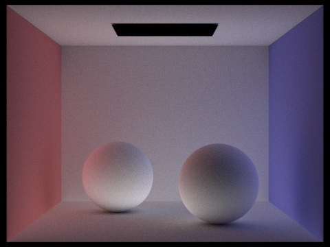
|
There is one more small note. Realistically, we don’t have to reach the max_ray_depth each time. Statistically speaking, we hit the point of diminishing return well
before this, so we implement a Russian Roulette algorithm. As the name suggests, before we recurse, with some probability (0.40 in my implementation), we cut the recursion, and
just return the radiance computed without another bounce back. The only difference this makes is that we also need to divide the q-rooted radiance equation by the probability of
back bounce, in this case 0.60. We save on some computation time, and statistically, we’ll be looking at basically the same render.
Maximal Ray Depth Comparison (1024 Samples Per Pixel):
|
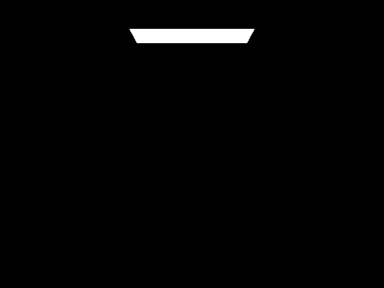
|
|
|
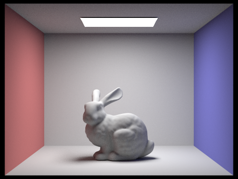
|
|
Pixel Sample Rate Comparison (4 Light Rays):
|
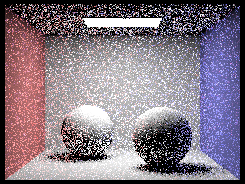
|
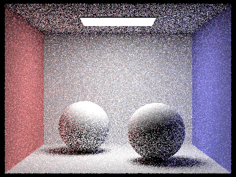
|
|
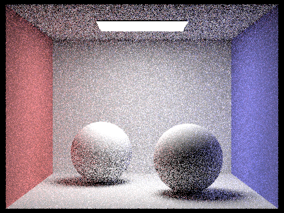
|
|
|
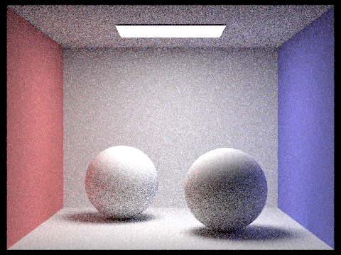
|
|

|
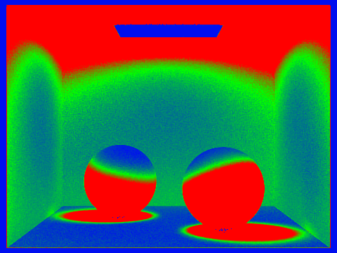
|
|
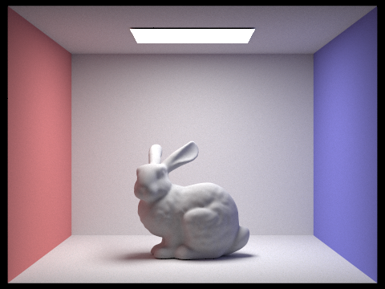
|
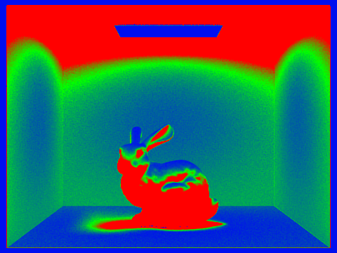
|
We already got a glimpse into how we can leverage statistics to improve renders with part 4’s Russian Roulette algorithm, and in that case we got a faster render time, but this doesn’t always mean statistical analysis and iteration of algorithms are used for speed. In fact, adaptive sampling trades longer render times (sometimes extremely longer) for clearer quality renders that cancel some of the noise.
Intuitively, adaptive sampling is testing whether or not our illumination has been constrained. We’ll generate a confidence interval, where a compressed confidence interval suggests we are reasonably sure that the illuminance will not be altered much by additional sampling, and a wide confidence interval suggests the opposite. This way, we can adapt the sampling frequency to prevent it from being unnecessarily static.
My implementation of adaptive sampling is a direct encoding of the adaptive sampling algorithm. We will terminate tracing rays through a pixel if
I <= maxTolerance * avg_illuminance; I = 1.96 * SD_illuminance / sqrt(sample_count). When tracing the num_samples rays through pixel (x, y),
we keep tracker variables s1 and s2, where s1 is the sum of the illuminance samples of pixel (x, y), and s2 is
the sum of the squares of the illuminance samples of pixel (x, y)).
We’ll batch sample to optimize our efficiency. What this means is that we will sample samplesPerBatch pixels each time, then test our termination statement.
From s1 and s2, we can calculate the average illumination from s1 / sample_count, and the variance (which is just the square of the SD)
from (1 / (sample_count - 1)) * (s2 - s1 * s1 / n). If our termination statement passes, we’ll simply end our Monte Carlo estimation earlier, otherwise, we’ll
keep sampling before we max out at ns_aa samples.